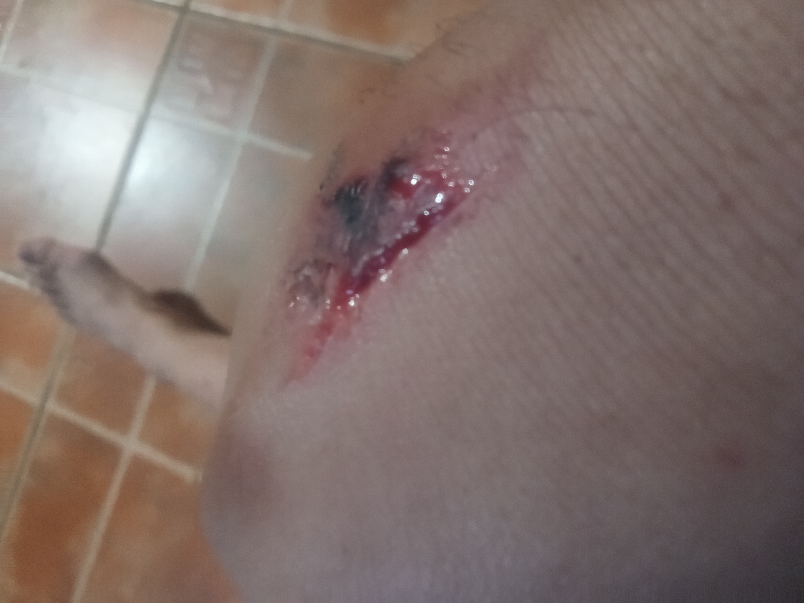
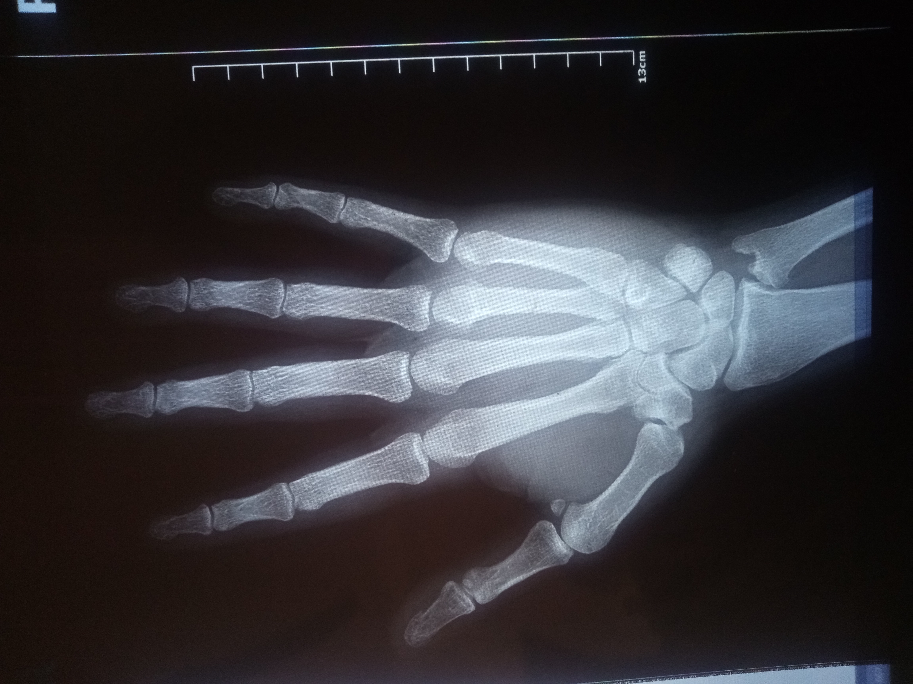
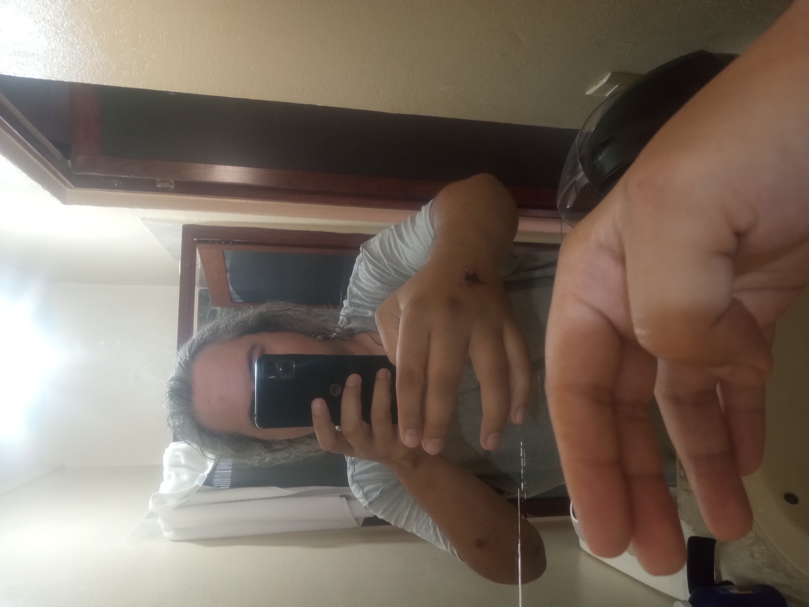
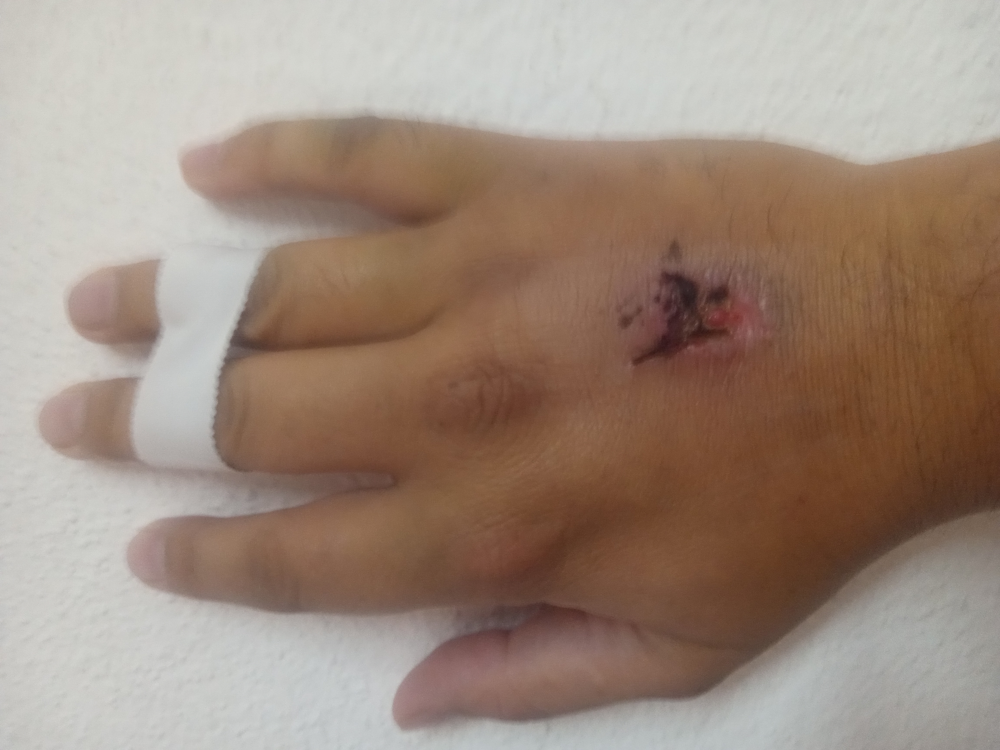
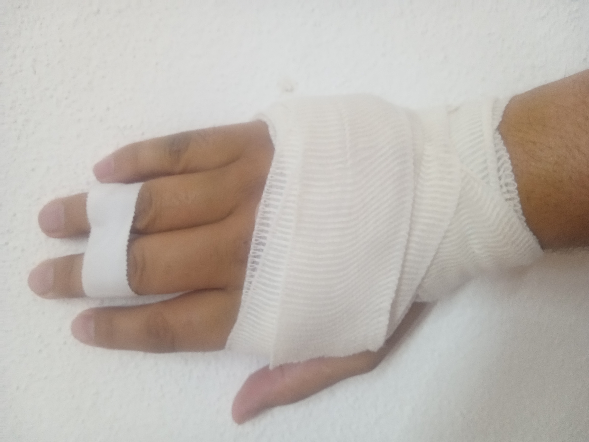
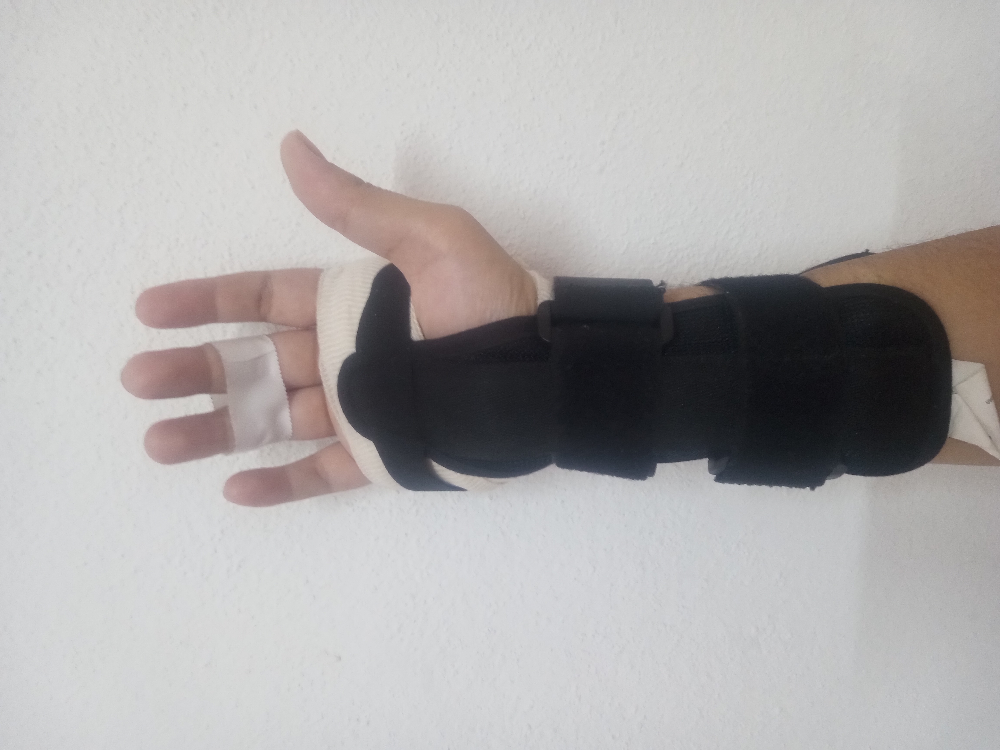

So, I broke my hand, the horrific displaced through-and-through way, with the dangling crooked apendage (finger in this case), where you always see them hold the patient down in the movies, and they make them bite down on something while they yank
it straight. It's actually not that bad, or maybe I have a high pain tolerance for some things. I skipped narcotics when I had my wisdom teeth pried out, and the same for my gall bladder surgery, where I immediately went straight to walking the
same day on nothing but OTCs. So, your mileage may vary. There's ordinary stuff that will make my eyes water, but surgery, having teeth pried out, or outright broken bones do not bother me that much.
The injury
I've had problems with dangerous people before, it's not worth going into the details yet again, just to be blocked and ignored. Shakespeare wrote an entire play about how humanity's stupid and petty bullshit gets innocent people killed,
and that can suffice for background. To keep the story short, I had a minor diagreement with some manner of aristocrat woman who is unaccustomed to hearing "no", and she began running around and accusing me of assault over an exteremly
minor disagreement worth less than $50. I wound up eating a homerun blow with the very tip of a metal pipe in the back of my hand that rang as if the guy just hit a ball out of the park, and I looked down to find an ugly avulsion
and a lot of purple swelling ballooning up. An x-ray revealed that the ring-finger metacarpal was fractured cleanly, straight across, right in the middle, with a sort of subtly meandering sinusoid break all around the circumference. It's a simple injury, but complications could have included compound fracture, or shattering, or fragments, and I'm glad to have avoided that, and probably narrowly.
 
Symtpoms
Well, you will probably know right away the first time you fracture something. I was utterly hopped up on natural adrenaline and I did not feel much outisde of numbness and vague aching which only made me more upset in the moment.
Later, what made it obvious was runaway swelling and bruising that made my hand resemble an inflated medical glove. It aches internally, it feels like you are experiencing a headache for the first time, somewhere other than your head.
There are lots of gross sensations of internal tension, friction, and bending. If you have ever had someone twist your arm as a kid, for pain submission, that is the sensation you get a lot of, because every bump and touch is percieved thusly
since it isn't just straining, it's flexing where it has a big break in it. I was prescribed a splinted wrist brace in place of a cast and told to keep my hand elevated. It indeed throbs and pinpricks if left to hang way below heart level.
I do perceive a pain component, but much of it is actually other related sensations which are more similar to disgust. There are many times where I will accidentally bunp or perturb the injury and laugh and shiver at how absurdly unpleasant
a sensation it is. What keeps it from being miserable, though, is that it stops as soon as you leave it alone, and then it's just a dull headache-like feeling you can take aspirin for.
Displacement
When I was seen by the doctor, there were no complications yet. But after I wore the brace for about a day, it seems like the metacarpal collapsed sideways and I watched with conern as my ring finger drifted towards the pinky and I found myself
stuck doing the vulcan V-hand salute involuntarily. It was late, so I made the trip to the ER, but there was no trauma specialist available to look at it, so I went home thinking it was less than 12 hours to get it looked at in the morning.
Instead, I discovered that bones do not much like being in a displaced position, and lots of inflammation set in. It seems to me that the body is trying to trigger swelling in order to realign the fracture. Anyway, I began feeling some grotesque
sensations along the lines of what you might expect from two broken metacarpal ends grinding and poking each other as the body attempts to pull them back together. It's uncomfortable enough that even knowing that the thing is broken and it's going to bark
at you, you suck it up, and you begin pulling on it and tipping it side to side, and I was startled when I found it to shift into place, as the break came back into alignment. I immediately taped my ring finger to my middle finger to stablize it in the
lateral axis. It seems to be really content now, and the swelling and pain has gone way down.

After the sensitivty went down, I found that pain would set in, and it's because there's strain or tension on the break. Surprisingly, I found that tightening the hand brace, instead of being miserably painful, actually produces relief, and a
sense of comfort. So, since it's happy to be firmly splinted and supported in place, I assume that means it's in proper alignment, and on its way to healing properly. I had a bandage wrapped around my hand under the brace to deal with the
avulsion on the back, and I think I'm going to leave it on because it distributes the pressure from the hand brace so that there are no pressure points. It feels like the hand is being firmly squished into its natural position, which is comfortable,
and if it heals in that shape and position, it ought to be back to normal in a few weeks.
  